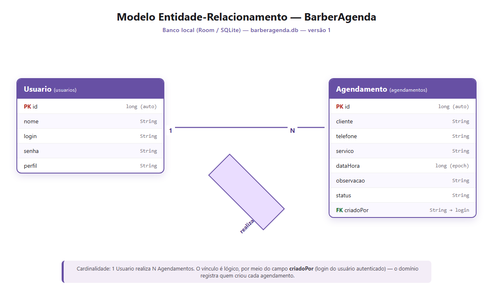
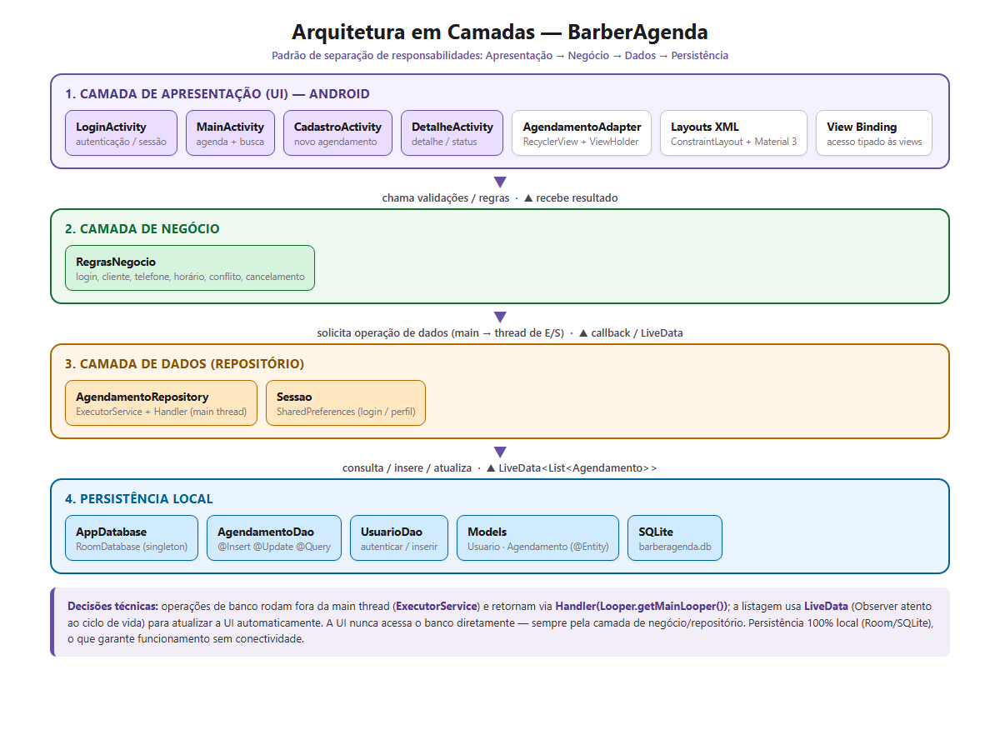

PONTIFÍCIA UNIVERSIDADE CATÓLICA DE GOIÁS
Escola Politécnica e de Artes
Curso Superior de Tecnologia em Análise e Desenvolvimento de Sistemas
Memorial Técnico
Modelagem de Dados e Arquitetura
Aplicação móvel BarberAgenda — Projeto Integrador 2026/2
| Projeto | BarberAgenda — agendamento de serviços em barbearia |
| Etapa | N1 — primeiro bimestre |
| Artefato | Modelagem de dados e definição arquitetural, com justificativa da pilha tecnológica (item 2 da N1) |
| Pilha tecnológica | Android nativo — Java 17, Room (SQLite), Material Design 3, View Binding, RecyclerView, Gradle/KSP |
| Equipe | (preencher) — coordenador e integrantes com atribuições |
| Repositório | (inserir endereço do Git) |
| Data | ___/___/______ |
Este documento apresenta a modelagem de dados e a definição arquitetural da aplicação BarberAgenda, contemplando as entidades do domínio, seus atributos, relacionamentos e regras de integridade, bem como a organização do código em camadas e a justificativa técnica da pilha adotada. O conteúdo atende ao item 2 da composição da N1 (Seção 8.1 do Documento Norteador do Projeto Integrador ADS 2026/2).
O BarberAgenda apoia a rotina de uma barbearia, permitindo que o cliente registre um horário e que o barbeiro administre a agenda do dia. O problema central é evitar conflitos de horário e organizar os atendimentos, com controle de acesso por perfil. O domínio foi delimitado com dois usuários identificáveis (dono/barbeiro e cliente) e regras de negócio explícitas (conflito, antecedência mínima e limite de cancelamento).
O modelo é composto por duas entidades principais relacionadas entre si e sujeitas a validação:

Figura 1 — Modelo Entidade-Relacionamento (DER) do banco local barberagenda.db.
| Campo | Tipo | Descrição | Restrições / regras |
|---|---|---|---|
| PK id | long (INTEGER) | Identificador único do usuário. | Chave primária, gerada automaticamente. |
| nome | String (TEXT) | Nome de exibição do usuário. | Preenchido no cadastro/seed. |
| login | String (TEXT) | Credencial de acesso. | Obrigatório; usado na autenticação. |
| senha | String (TEXT) | Senha de acesso. | Obrigatória (valores de demonstração). |
| perfil | String (TEXT) | Papel do usuário. | Valores: DONO ou CLIENTE; controla permissões. |
| Campo | Tipo | Descrição | Restrições / regras |
|---|---|---|---|
| PK id | long (INTEGER) | Identificador único do agendamento. | Chave primária, gerada automaticamente. |
| cliente | String (TEXT) | Nome do cliente atendido. | Obrigatório (não vazio). |
| telefone | String (TEXT) | Contato do cliente. | Obrigatório; mínimo de 8 dígitos. |
| servico | String (TEXT) | Serviço escolhido (lista fixa). | Obrigatório. |
| dataHora | long (INTEGER) | Data e hora do atendimento. | Obrigatório; armazenado em epoch milliseconds. Sujeito às regras de antecedência e conflito. |
| observacao | String (TEXT) | Observação livre sobre o atendimento. | Opcional. |
| status | String (TEXT) | Situação do agendamento. | Valores: CONFIRMADO, CANCELADO, CONCLUIDO. Inicia como CONFIRMADO. |
| FK criadoPor | String (TEXT) | Login do usuário que criou o agendamento. | Chave estrangeira lógica para Usuario.login. |
Usuario (1) — realiza — (N) Agendamento. Um usuário pode criar vários agendamentos; cada agendamento é criado por um único usuário. A associação é registrada no campo criadoPor, que armazena o login do usuário autenticado no momento do cadastro. Trata-se de uma chave estrangeira lógica: o Room não impõe restrição de FK física, e a integridade é mantida pela camada de negócio (o login é obtido da sessão ativa).

Figura 2 — Arquitetura em camadas: Apresentação → Negócio → Dados → Persistência.
Autenticação: a UI envia login/senha a RegrasNegocio.validarLogin; em seguida o AgendamentoRepository.autenticar consulta o UsuarioDao em thread secundária e devolve o usuário à UI, que grava a sessão (Sessao.abrir) e navega para a agenda.
Cadastro de agendamento: a CadastroActivity captura data e hora com MaterialDatePicker e MaterialTimePicker, valida os campos com RegrasNegocio e verifica conflito de horário no repositório antes de inserir. O status inicial é CONFIRMADO e o criadoPor vem da sessão.
| Escolha | Justificativa |
|---|---|
| Android nativo em Java | Recursos nativos e melhor desempenho de execução em dispositivo real; alinhado ao conteúdo da disciplina (Java, View Binding, Lambda, Intents, RecyclerView). |
| Room (SQLite) | Persistência local estruturada com verificação de consultas em tempo de compilação, integração com LiveData e suporte a migrações. |
| Material Design 3 | Componentes modernos (MaterialButton, MaterialCardView, TextInputLayout), tema claro/escuro automático e acessibilidade. |
| ConstraintLayout | Telas responsivas com hierarquia plana, substituindo layouts legados (RelativeLayout/LinearLayout como raiz). |
| View Binding | Elimina findViewById e reduz crashes por referência nula; tipagem segura gerada em tempo de compilação. |
| RecyclerView + DiffUtil | Listagem performática com reciclagem de views e atualização eficiente. |
| Gradle + KSP | Build padronizado e processamento de anotações do Room em tempo de compilação. |
Alternativas consideradas e descartadas: Kotlin/Jetpack Compose (a disciplina enfatiza Java e XML/View Binding); backend remoto (Firebase) na N1, postergado para a N2 por ser requisito R6; autenticação com hash de senha — previsto para evolução, mantendo-se senhas de demonstração nesta etapa.
| Req. | Descrição | Situação atual |
|---|---|---|
| R1 | Mínimo de 6 telas funcionais | Parcial — 4 telas (Login, Agenda, Cadastro, Detalhe); ampliar na N2. |
| R2 | Autenticação com 2 perfis | Atendido — DONO e CLIENTE com permissões distintas. |
| R3 | Manutenção de dados sobre 2 entidades | Parcial — Agendamento com inclusão/consulta/alteração; cadastro de usuário pela UI e exclusão previstos para a N2. |
| R4 | Mínimo de 3 regras de negócio não triviais | Atendido — conflito de horário, antecedência mínima de 1h e limite de cancelamento de 2h (dono cancela a qualquer momento). |
| R5 | Persistência local com tratamento de ausência de conexão | Atendido — Room/SQLite, operação offline. |
| R6 | Persistência remota / sincronização | Previsto para a N2 |
| R7 | Integração com serviço externo | Previsto para a N2 |
| R8 | Recurso nativo do dispositivo | Previsto para a N2 — uso de câmera/geolocalização/notificações. |
| R9 | Listagem com filtro/busca e visão consolidada | Parcial — busca implementada; visão consolidada (indicador/gráfico) prevista para a N2. |
| R10 | Tratamento de erros e estados | Parcial — mensagens (Snackbar/Toast), estado de lista vazia e desabilitação de botões; indicador de carregamento a refinar. |
| R11 | Usabilidade e acessibilidade | Parcial — rótulos, contraste (M3) e áreas de toque; revisão contínua. |
| R12 | Organização em camadas, sem credenciais no código | Atendido — pacotes data/negocio/ui; credenciais de demonstração via buildConfig. |
| R13 | Repositório Git com histórico distribuído e README | Parcial — repositório ativo; README e histórico distribuído em andamento. |
| R14 | Pacote instalável testado em dispositivo | Parcial — APK de depuração gerado; teste em aparelho físico previsto. |
A modelagem atende ao mínimo exigido (duas entidades relacionadas e validadas) e sustenta as três regras de negócio da aplicação. A arquitetura em camadas separa responsabilidades, isola a persistência e prepara a evolução para a N2, quando serão incorporados o backend remoto com sincronização (R6), a integração externa (R7), o recurso nativo do dispositivo (R8) e a visão consolidada de dados (R9), além da ampliação do número de telas (R1).